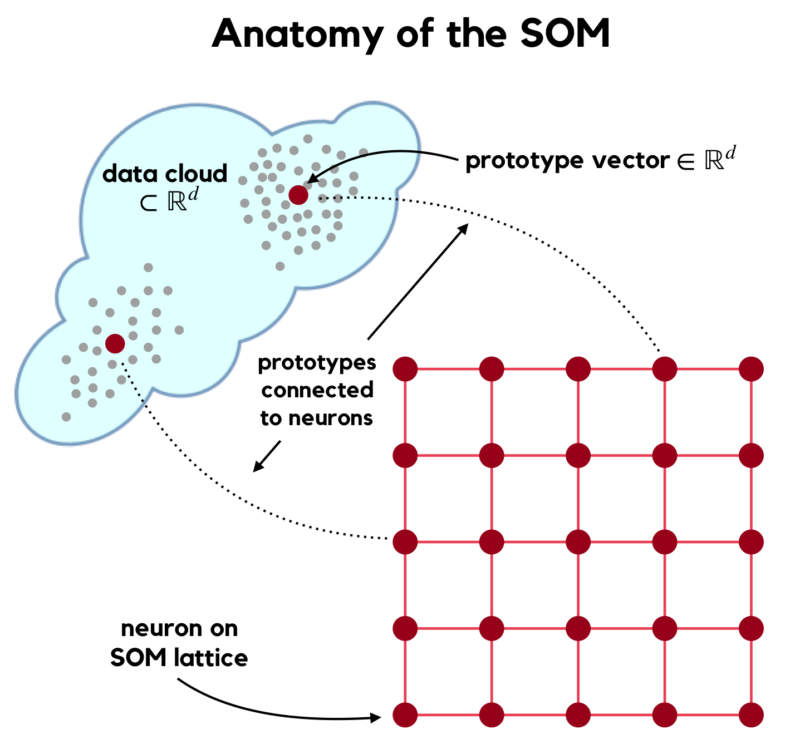

Chapter 1 Background
1.1 Kohonen’s SOM
Kohonen’s Self-Organizing Map (SOM, [1]) is an unsupervised neural network for high-dimensional manifold learning and low-dimensional representation of this learning. During training a pre-defined number of prototype vectors \[W = \{w_j \in \mathbb{R}^d \}_{j=1}^{n_W}, \] are formed to best represent given training data \[ X = \{x_s \in \mathbb{R}^d \}_{s=1}^{n_X} \] which are assumed to be sampled from an (unknown) manifold \(\mathcal{M}\). Each prototype vector \(w_j\) is associated with a neuron \(\nu_j\), which is an element of the SOM’s output space \(\mathcal{L}\) (usually a lattice topology in \(\mathbb{R}^2\) or possibly \(\mathbb{R}^3\), SOMDisco exclusively uses 2-d lattices). As the prototype vectors are formed the neurons are simultaneously organized on \(\mathcal{L}\) such that they are topology preserving – that is, neighboring prototypes in \(\mathbb{R}^d\) are associated with neurons neighboring neurons on \(\mathcal{L}\). Salient features of \(\mathcal{M}\) are then faithfully represented on \(\mathcal{L}\), allowing an analyst to infer high-dimensional data characteristics (such as, e.g., cluster structure) from their lattice representation.

This organization is enforced by cooperative updates to the prototypes during the learning process. At training step \(t\), prototype updates are governed by \[ w_j^{t} = w_j^{t-1} + \alpha_t \times \eta(j, j^*_t \, | \, \sigma_t) \times (x^t - w_j) \] where
- \(\alpha_t\) is a learning parameter controlling the amount by which prototypes are allowed to change at step \(t\), which should be annealed over time
- \(x^t \in X\) is a training vector chosen at random for presentation to the network at time \(t\), also called the network stimulus at time \(t\)
- \(\eta\) (the neighborhood function) is a non-increasing function of the lattice distance between neurons \(\nu_j\) and \(\nu_{j^*_t}\), where \(j^*_t\) indexes the prototype closest to the datum \(x^t\). We call this the Best Matching Unit of \(x^t\):
\[ BMU(x^t) := j^*_t = \arg\min_j \, d_E(w_j, x^t) \]
where \(d_E\) is standard Euclidean distance.
- \(\sigma_t\) is a learning parameter controlling the size of a lattice neighborhood centered about neuron \(\nu_{j^*_t}\); neurons residing in this neighborhood are affected more strongly by the stimulus \(x^t\), with affect inversely proportional to their lattice distance to the BMU.
The implication of including the composition of several notions of distance (i.e., in both \(\mathbb{R}^d\) and \(\mathcal{L}\)) in the prototype update rule forms a highly non-linear mapping \(\Phi \, : \, \mathcal{M} \to \mathcal{L}\). \(\Phi\) is self-organized, meaning the relationship between neuron proimities on \(\mathcal{L}\) and prototype proximities in \(\mathcal{M}\) arises organically, without direct optimization of any loss function. SOM Learning is modeled after the organization and compartmentalization of the learning process which occurs in the human brain.
1.2 Conscience SOM
Kohonen’s prototype updates can yield a mapping \(\Phi\) which under-utilizes the quantizer’s full codebook (i.e., the set of prototypes \(W\)). Such under-utilizations degrade the richess of the representation of \(\mathcal{M}\) by \(\mathcal{W}\) (and on \(\mathcal{L}\)). To correct this, DeSieno introduced the Conscience SOM (or CSOM, [2]), which introduces a bias to Kohonen’s algorithm to achieve a mapping \(\Phi\) with higher entropy. Each prototype possesses its own bias \(b_j^t\) which influences the competitive stage of SOM learning such that CSOM BMU selection at time \(t\) becomes \[ BMU(x^t) = \arg\min_j \, d_E(w_j, x^t) - b_j^t.\] The biases \(\{b_j\}\) are formed alongside the prototype vectors during learning via the use of auxiliary quantities \(\{p_j\}\) representing the historical win frequencies of each prototype (i.e, proportion of times a prototype has quantized data during learning). These win frequencies are updated during each learning step by \[ p_j^t = p_j^{t-1} + \beta_t \times (\mathbb{1}[j = j^*_t] - p_j^{t-1}) \] yielding a bias \[ b_j^t = \gamma_t \times \left( \frac{1}{n_W} - p_j^t \right) \] For maximum-entropy mapping, \(p_j = 1 / n_W\) implying zero bias. The additional learning parameters \(\beta_t\) and \(\gamma_t\) control the degree to which the SOM’s “Conscience” influences its learning. Like the learning rate \(\alpha_t\) they should both be annealed over time.
A properly trained CSOM can achieve more effective utilization of the SOM’s output space [2] which aides (cluster) inference from a trained map. In contrast to Kohonen’s cooperative function (\(\eta\)), DeSieno also suggested restricting prototype updates to a very small neighborhood of neurons (e.g., \(\sigma_t = 1\)), which decreases the computational burden of CSOM learning (as compared to Kohonen’s SOM). Moreover, as all prototypes are encouraged to participate in the learned representation of \(\mathcal{M}\) the resulting view of the manifold is often richer, providing for more sophisticated cluster extraction tools such as the CADJ matrix.
1.3 The CADJ Matrix
CADJ (or Cumulative ADJacency, [3]) is a weighted adjacency matrix of SOM prototypes (or, equivalently, their associated neurons). The edge weights of this Topology Representing Network [4] are given by \[ CADJ_{ij} = \# \{x_s \, : \, BMU1(x_s) = i \text{ and } BMU2(x_s) = j \} \] where BMU1 and BMU2 are the first and second-ranking BMU, respectively. Analysis of the CADJ values reveals the “seams” (disconnects) of a learned manifold, which are helpful for discerning cluster structure.
While CADJ can technically be computed using the codebook of any vector quantizer as vertices, the SOM’s output space \(\mathcal{L}\) provides prime real estate on which to view and analyze this graph, regardless of data dimension \(d\). The CONNvis visiualization [3], derived from the symmetrized CONNectivity graph, \[CONN = CADJ + CADJ^T,\] has been used repeatedly to elicit cluster structure from complex, high-dimensional manifolds with no restriction on cluster size (number of data members), shape (e.g., Gaussianinity), or dimension (low-rank embeddings). These settings are precisely where performance of other clustering routines (e.g., hierarchical methods, k-means, mixture models) deterioriate.
Despite the demonstrated benefits and sophistication of the combination of CSOM manifold learning and subsequent CADJ-based cluster extraction (CITE), neither of these tools are currently publicly available to the machine learning community. SOMDisco rectifies this omission.
References
[1] T. Kohonen, Self-organizing maps. Springer, 2000.
[2] D. DeSieno, “Adding a conscience to competitive learning,” in IEEE international conference on neural networks, 1988, vol. 1, pp. 117–124.
[3] K. Taşdemir and E. Merényi, “Exploiting data topology in visualization and clustering of self-organizing maps,” IEEE Transactions on Neural Networks, vol. 20, no. 4, pp. 549–562, 2009.
[4] T. Martinetz and K. Schulten, “Topology representing networks,” Neural Networks, vol. 7, no. 3, pp. 507–522, 1994.